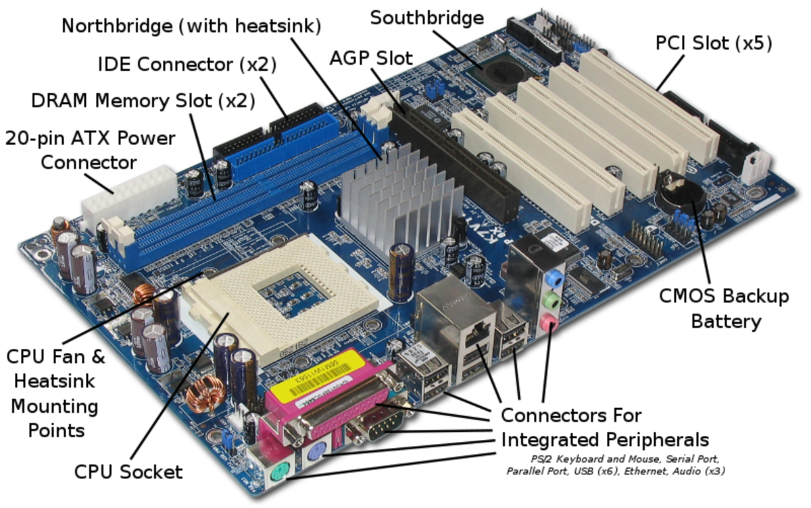
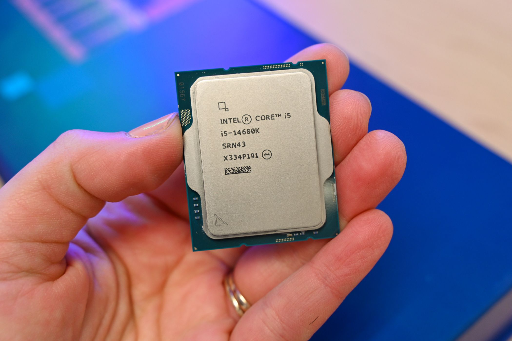
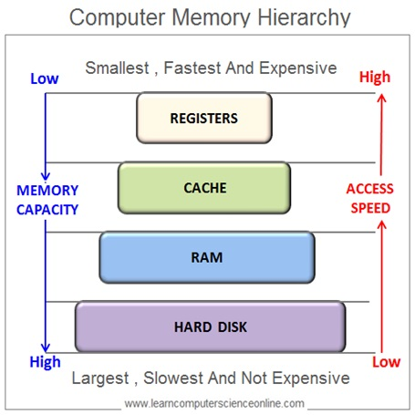
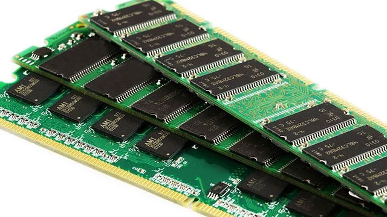

What are bits? Single binary digits (0 or 1) - the
smallest unit of data
What are bytes? 8 bits grouped together - can
represent 256 different values
Why it matters: All data on your computer—text,
images, video, programs—is stored and processed as collections of bits
and bytes
Practical takeaways:
Understanding data sizes helps you make informed decisions about
storage needs and processing requirements
Computer System Components
Compute vs. I/O Performance
As we move through these notes, we'll talk about
compute and I/O performance.
Compute performance: Raw processing power (CPU/GPU)
I/O (input/output) performance: How quickly data
moves between components
Bottlenecks: System performance is limited by the
slowest component
Practical takeaways:
Balanced systems perform better than those with one very
high-end component but weaker supporting hardware
Form Factors
What is a form factor? The physical size, shape, and
specification of computer hardware
Common form factors:
Desktop towers (full, mid, mini)
All-in-ones
Laptops (standard, ultrabooks)
Tablets and convertibles
Practical takeaways:
Form factor affects upgradability, portability, and cooling
capacity
Chassis
What is it? The physical case that houses all
internal components
Functions:
Physical protection
Airflow management
Component organization
Noise reduction
Practical takeaways:
A quality chassis improves cooling efficiency and can extend
component lifespan
Motherboard

What is it? The main circuit board that connects all
components
Functions:
Provides physical connection points for all components
Contains chipsets that control data flow
Houses BIOS/UEFI (basic input/output system)
Practical takeaways:
The motherboard determines what components are compatible with
your system and future upgrade options
System Bus
What is it? Communication pathways that transfer data
between components
Not an individual component; it is a specification of the
motherboard
32-bit vs 64-bit systems:
64-bit systems can address more RAM (>4GB) and process larger
chunks of data per instruction than 32-bit systems
Practical takeaways:
64-bit systems are standard now and necessary for modern computing
tasks
CPU (Central Processing Unit)

What is it? The "brain" of the computer
that executes instructions
Key specifications:
Clock speed (GHz)
Cores - independent processing units
Cache - fast memory for quick data access
Heat management:
Heat sinks and fans dissipate heat
Thermal paste improves heat transfer
Overheating reduces performance and lifespan
Practical takeaways:
For most everyday tasks, multi-core performance is more important
than raw clock speed
System Clock and Clock Speed
What is it? Internal timing mechanism that
synchronizes operations
Clock speed measurement:
Measured in GHz (billions of cycles per second)
Higher is generally better, but not the only factor
Practical takeaways:
CPU architecture efficiency often matters more than raw clock
speed
Memory

Computer Latency in Perspective
Computers are so fast that it can be difficult to understand the
latency of different components. Let's put the relative latency of
different components into a human scale:
Component
Latency (Round Trip Fetch)
Activity
CPU Registers
1 minute
Fetch something from your desk
L1 Cache
4 minutes
Fetch something from other side of building
L2 Cache
10 minutes
Fetch something from another building
L3 Cache
50 minutes
Fetch something from a nearby town
RAM
4 hours
Fetch something from another state
SSD
1-2 days
Fetch something from across the country
HDD
5-7 days
Fetch something from another country
Network (Internet)
2-4 weeks
Fetch something from another continent
Registers
Registers are temporary storage for the CPU to work
with as it performs calculations.
Registers aren't an individual component; they are built into the
CPU.
Extremely fast, because they are in the "working space" of
the CPU.
Very small amount - roughly 128-256 bytes
Practical takeaways:
Registers are fundamental to the operation of the CPU; they are
not a specification that is listed by CPU manufacturers.
You do not need to consider this specification when buying a CPU
for most everyday computing tasks.
Cache
Cache is a type of memory that stores copies of
frequently used data from RAM.
Also not an individual component; it's built into the CPU.
Cache is faster than RAM, but smaller and more expensive.
Cache is used to store copies of frequently used data from RAM.
Avoids need for longer trip to RAM for frequently used data.
Different types (L1, L2, L3) have to do with the speed of the cache
and the size.
Practical takeaways:
Cache becomes important for high-performance computing and
specialized computers (e.g. servers)
When buying a CPU, you can see the cache size as a specification.
Random Access Memory (RAM)

What is it? Temporary memory that stores active data
for quick access